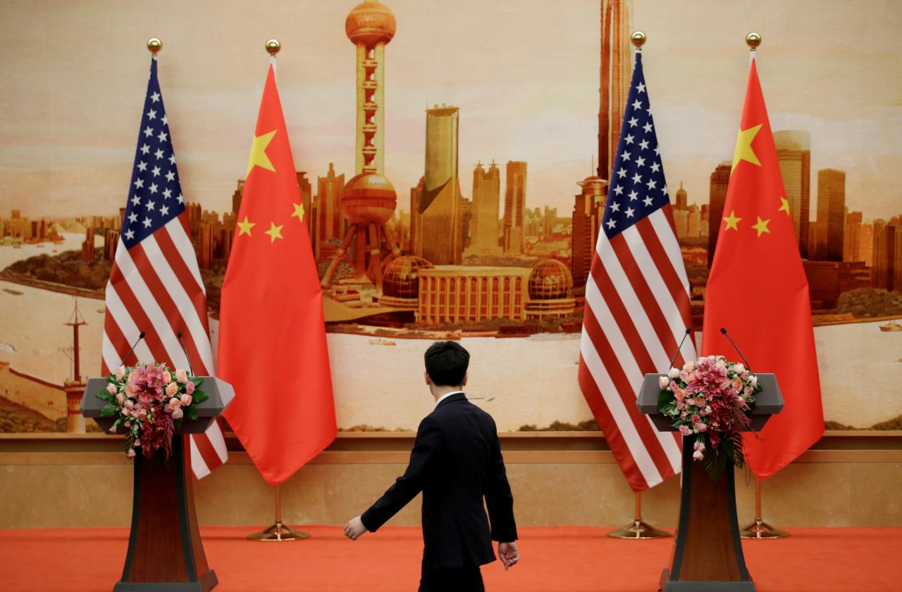

Chinese finance ministry official says 'optimistic' on trade war breakthrough
Author: Yawen Chen
Published: October 10, 2018
PHOTO: A staff member walks past U.S. and Chinese flags placed for a joint news conference by U.S. Secretary of State Mike Pompeo and Chinese Foreign Minister Wang Yi at the Great Hall of the People in Beijing, China June 14, 2018. REUTERS/Jason Lee/File Photo
NUSA DUA, Indonesia (Reuters) - A Chinese finance ministry official said on Wednesday he felt “a little bit more optimistic” on the prospect of breaking an impasse in trade negotiations with Washington, saying both sides are too economically integrated to tolerate a fallout.
An escalating tariff war between the world’s two largest economies has set world markets on edge and cast a cloud over global economic growth.
China, angered by the latest U.S. tariffs on $200 billion of Chinese goods, turned down Washington’s invitation last month for another round of trade talks, urging the U.S. government to show “sincerity” first by dropping tariff threats.
“Currently the ball is in their court. But personally I’m a little bit more optimistic,” Zhou Qiangwu, Associate Counsel of the Finance Ministry’s department of international affairs, told Reuters on the sidelines of the annual IMF and World Bank meetings in Bali.
“The talks are still going on, via different channels. The cancellation (of official trade talks) is only one of them,” said Zhou, although he did not elaborate and said he was unsure when the next formal negotiation would take place.
President Donald Trump on Tuesday repeated his threat to slap tariffs on an additional $267 billion of Chinese imports if Beijing retaliates for the recent levies and other measures the United States has imposed.
Trump, speaking to reporters in the Oval Office, also said China is not ready to reach a deal on trade.
PHOTO: A container truck moves past containers at the Yangshan Deep Water Port in Shanghai, China April 24, 2018. REUTERS/Aly Song/File Photo
“China wants to make a deal, and I say they’re not ready yet,” Trump said. “I just say they’re not ready yet. And we’ve canceled a couple of meetings because I say they’re not ready to make a deal.”
On Monday, U.S. Secretary of State Mike Pompeo and Chinese Foreign Minister and State Councillor Wang Yi exchanged unusually harsh remarks in public over their governments’ deep-seated differences during a brief visit to Beijing by Washington’s top diplomat.
Zhou said while the trade war had impacted growth and hurt market confidence, more serious problems would start to hit the global economy if the situation escalated.
“If the world’s two largest economies cannot work together, the whole world will suffer,” he said.
An opinion piece published on Wednesday in the Global Times, a widely read Chinese tabloid, said the United States wants to be the only winner in its conflict with China, but history says that approach will be full of risks.
It is also unrealistic for China to seek an overwhelming victory over the United States, given its leadership in global technology and ability to mobilize allies to confront China, according to the article.
Seeking an alternative resolution will inevitably be the only option, the article said.
The International Monetary Fund on Tuesday cut its global economic growth forecasts for 2018 and 2019, saying that the U.S-China trade war was taking a toll and emerging markets were struggling with tighter liquidity and capital outflows.
A spokesman for China’s Finance Ministry said Zhou’s views did not reflect the ministry’s official stance.